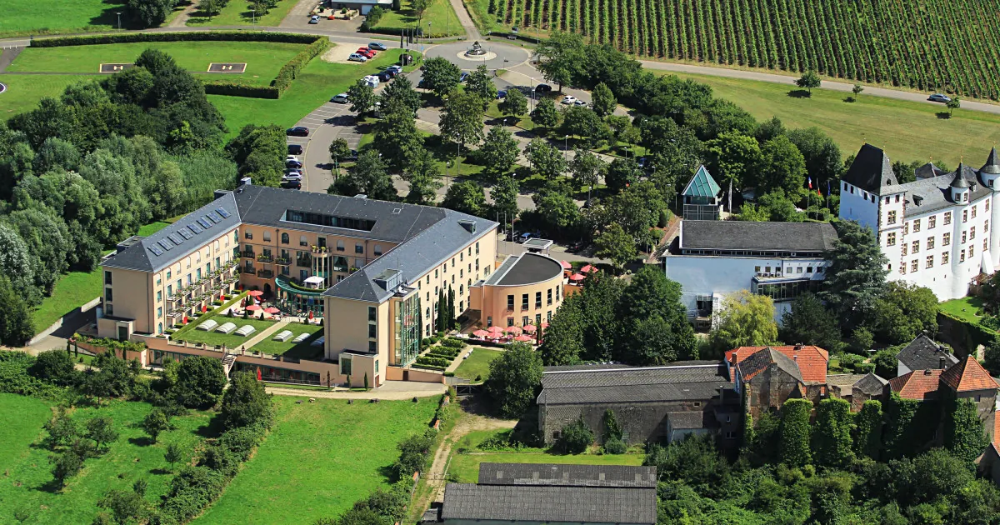
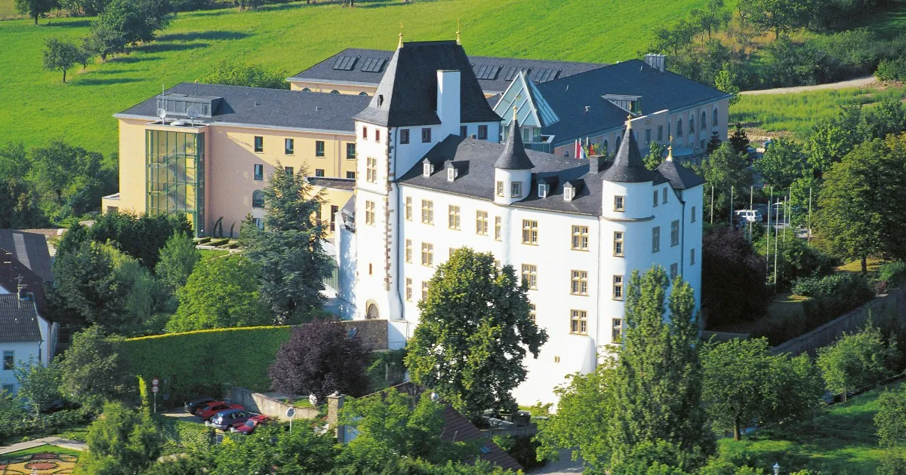

Lodging Catalog · Perl-Nennig, Saarland
Where to Sleep After Dinner
4 properties inside walking distance of Schloßstraße 27–29.
Only one is on-site. Book dinner first, then bed.
⚠ Creative-break closures: Victor's Fine Dining is closed
18 May–7 Jun 2026 and 21 Sep–4 Oct 2026.
Verify your Saturday is outside these windows before booking anything.
Village walking distances from Schloßstraße 27–29
Restaurant
anchor
0 m
Schloss Berg
same complex
~10 min
Zur Traube
910 m
~11 min
Wieser / Lisa
~900 m
First Pick


✓ First Pick
★★★★★
5-Star Superior · Renaissance castle + Roman villa · 87 rooms
0 m · same complex
Indoor Pool
Sauna + Steam
Spa
Fitness
Bacchus Restaurant
Landgasthaus
Castle Rooms
Villa Rooms
"Our restaurant is in the VICTOR'S RESIDENZ-HOTEL SCHLOSS BERG, rated a 5-star Superior. We will be pleased to book rooms for you." — Restaurant FAQ
Fallback Options
Fallback
910 m · 11 min
3.9/5 · 49 Tripadvisor reviews[7]
From €99/night (singles) ·
doubles €129–244[9]
On-site Restaurant
EV Charger
Free Parking
Balconies
Kitchenettes
42 m² Landhaus doubles, owner Carlo Boesen. Breakfast and regional cuisine on-site. Phone +49 6866 349.[8]
Budget Reference Only
Only 4 properties are within walking distance of the restaurant in Nennig village.
For special-character options with a taxi ride,
see the taxi-range lodging survey.
Not walking distance: Hotel Sonnenhof, Hotel Hammes, Haus & Hof, Hotel Perler Hof — all in Perl town centre, ~4–5 km south. Good on their own merits but require a car or taxi after dinner.
Remich (Luxembourg) is also non-walking — nearest bridge crossings add real distance.[15][7]
Booking Sequence
-
1Book dinner at Victor's Fine Dining first.[16] The restaurant runs Thursday–Sunday dinner and Saturday–Sunday lunch — confirm the date is open.
-
2Ask the restaurant to book a Schloss Berg room alongside the dinner reservation (FAQ confirms they will),[2] or book directly at victors.de[3] or Booking.com.[18]Room categories: Classic / Superior / Deluxe / Junior suites in the villa; Princess / Prince / Empress in the castle.
-
3If Schloss Berg is sold out: call Hotel Zur Traube at +49 6866 349,[8] then Wieser Gästehaus at 06866 274.[12]
Related Research